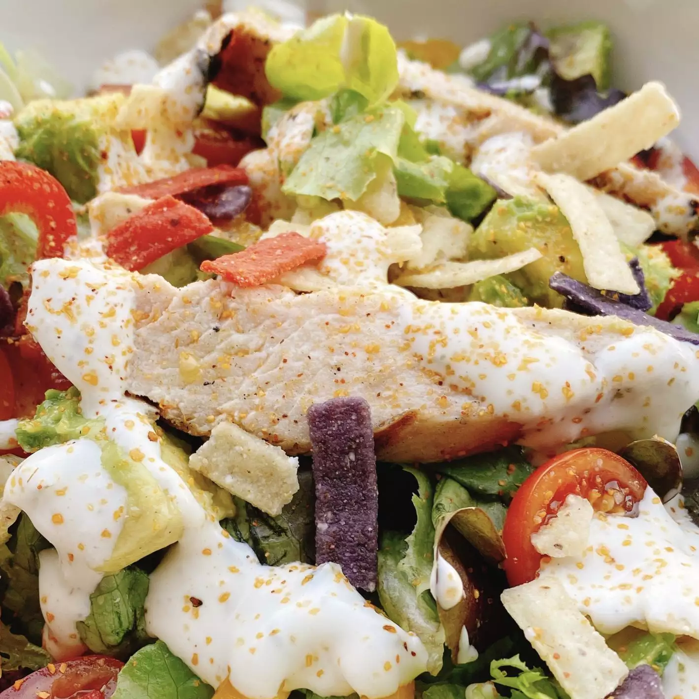

Grilled Chicken Bacon Ranch Salad

Description
I feel like pasta salads have been having a glow up
ever since we realized we don’t need to load them
with a pound of mayo. No shame in enjoying the nostalgic,
mayo-filled pasta salad, but wait until you try this
incredible chicken bacon ranch pasta salad.
After I originally shared an amazing BLT pasta salad
last summer I knew I wanted a new twist with
delicious grilled chicken and a rainbow of veggies.
This wonderful pasta salad is mayo-free and filled
with grilled chicken, crispy bacon, your fav pasta,
all of the best summer produce and the easiest, creamy
ranch dressing. Everyone at your next BBQ is going to
fall in LOVE so be sure to put this one on your summer holiday menu!
This comprehensive email series and FREE, printable e-book
has all of the tips, tricks and tutorials you’ll need to
gain confidence behind the grill this summer (and all year round!)
You’ll learn:
- Exactly how to operate your gas grill + get all of our
recommended grilling tools
- How to grill amazing proteins to use in your fav recipes (like this salmon!)
- The best way to grill any type of veggie
- And even how to make desserts on the grill!
Ingredients
- 4 heads baby artisan lettuce
- 1 pound grilled chicken breast, sliced
- 10 ounces multi-colored cherry tomatoes, halved, or more to taste
- 1 cup thinly sliced mini peppers
- ½ pound cooked bacon, chopped
- ½ cup ranch dressing
- 2 medium avocados - peeled, pitted, and cubed
- ½ cup multicolored tortilla strips
- pollo asado seasoning (Optional)
Steps
- Remove core from each mini artisan lettuce.
Place each lettuce head on a large cutting
board and cut each lettuce head into bite-sized pieces,
using a sharp knife. Place lettuce in a very large bowl.
- Add chicken, tomatoes, and peppers to salad greens and sprinkle
with chopped bacon. Pour in ranch dressing and toss to combine.
- Sprinkle cubed avocado and tortilla strips over the the
salad and season with pollo asado seasoning, if desired.